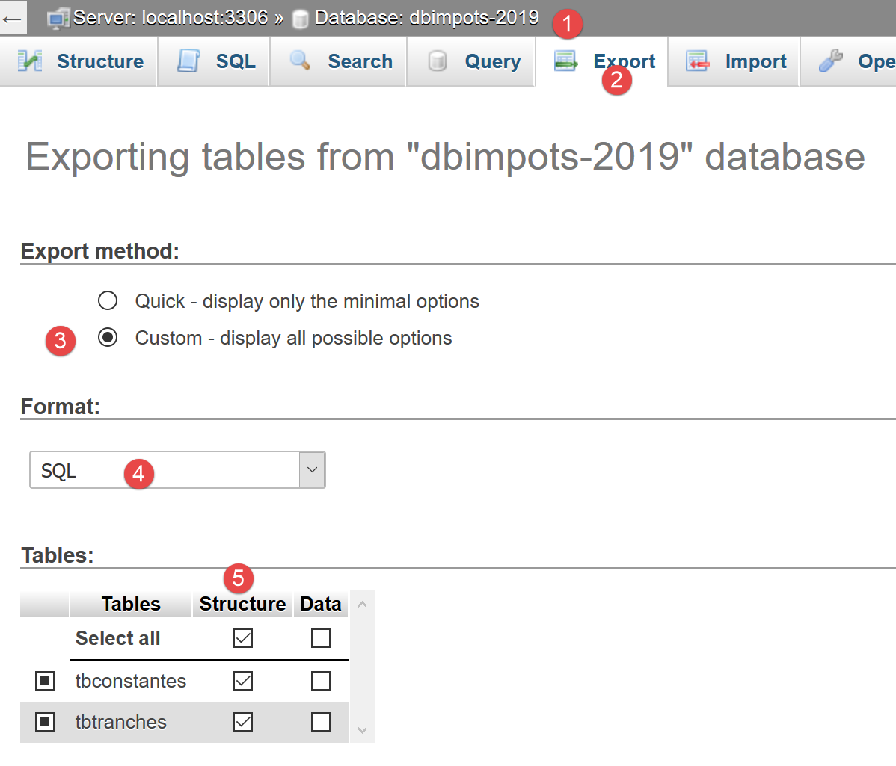
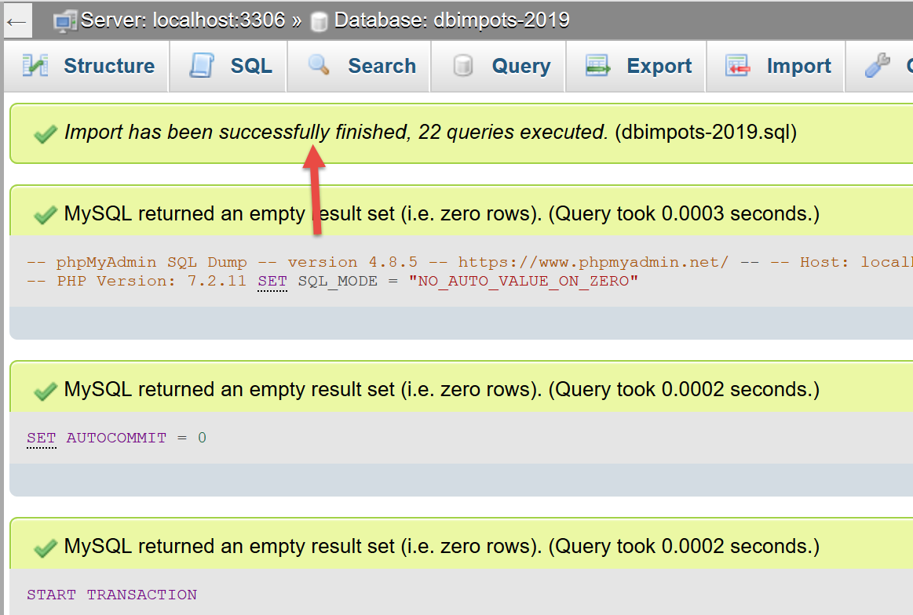
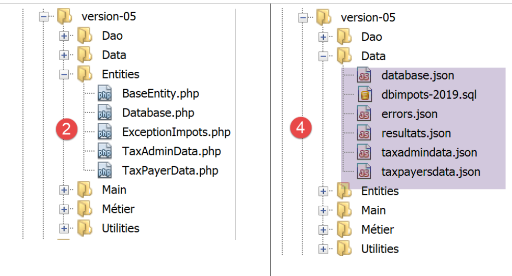
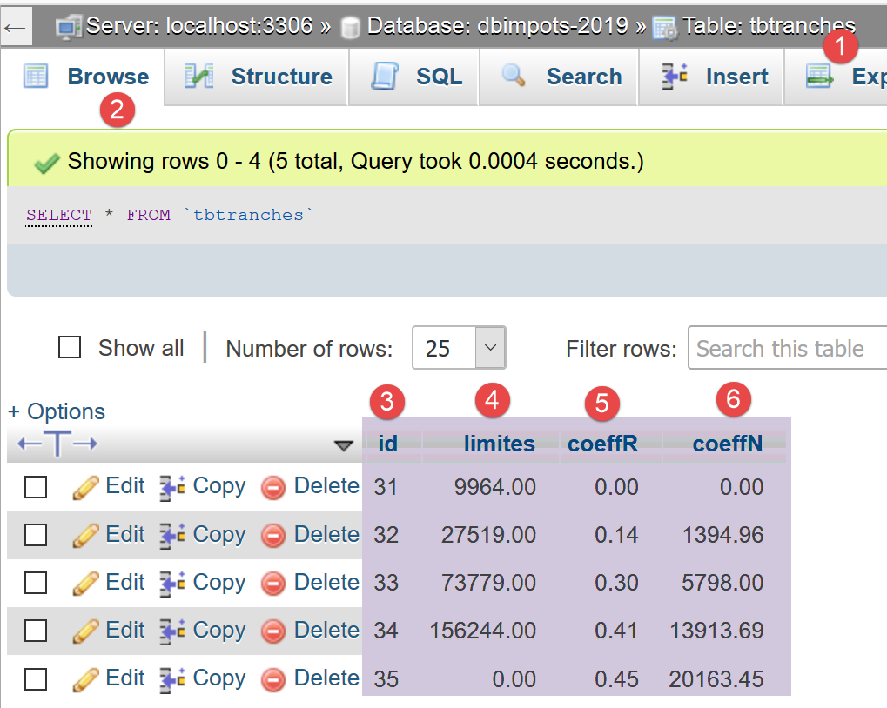
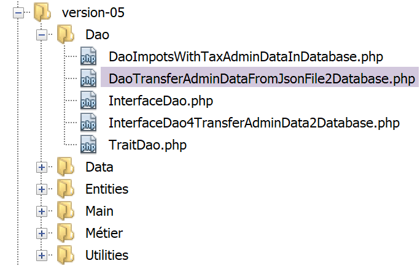

13. Anwendungsübung – Version 5

Wir haben bereits mehrere Versionen dieser Übung geschrieben. Die letzte Version verwendete eine mehrschichtige Architektur:

Die Schicht [dao] implementiert eine Schnittstelle [InterfaceDao]. Wir haben eine Klasse erstellt, die diese Schnittstelle implementiert:
- [DaoImpotsWithTaxAdminDataInJsonFile], die die Steuerdaten aus einer Datei jSON abruft;
Wir werden die Schnittstelle [InterfaceDao] durch eine neue Klasse [DaoImpotsWithTaxAdminDataInDatabase] implementieren, die die Daten der Steuerbehörde aus einer Datenbank MySQL abruft.
13.1. Erstellung der Datenbank [dbimpots-2019]
In Anlehnung an das Beispiel im Abschnitt „Link“ erstellen wir eine Datenbank MySQL mit dem Namen [dbimpots-2019], deren Eigentümer [admimpots] ist und deren Passwort [mdpimpots] lautet:

- Im oben genannten [1-4] sehen wir die Datenbank [dbimpots-2019], die derzeit keine Tabellen enthält;

- Im obigen [1-5] sehen wir, dass der Benutzer [admimpots] alle Rechte an der Datenbank [dbimpots-2019] hat. Was wir hier nicht sehen, ist, dass dieser Benutzer das Passwort [admimpots] hat;
Wir erstellen nun die Tabelle [tbtranches], die die Steuerklassen enthalten wird:

- In [1-7] erstellen wir eine Tabelle namens [tbtranches] mit 4 Spalten;

- in [3-6] definieren wir eine Spalte mit dem Namen [id] (3) vom Typ Ganzzahl [int] (4), die als Primärschlüssel [6] der Tabelle dient und durch die Funktion SGBD automatisch inkrementiert wird [5]. Das bedeutet, dass MySQL die Werte des Primärschlüssels beim Einfügen selbst verwaltet. Es weist dem Primärschlüssel des ersten Eintrags den Wert 1 zu, dem nächsten den Wert 2 usw.;
- Bei [7] bietet uns der Assistent weitere Optionen zur Konfiguration des Primärschlüssels an. Hier begnügen wir uns damit, die Standardwerte zu übernehmen ([7]);

- In [8-16] definieren wir die drei weiteren Spalten der Tabelle:
- [limites] (8) vom Typ Dezimalzahl (9) mit 10 Ziffern, davon 2 Dezimalstellen (10), enthält die Elemente der Spalte 17 der Steuerklassen;
- [coeffR] (11) vom Typ Dezimalzahl (12) mit 6 Ziffern, davon 2 Dezimalstellen (13), enthält die Elemente der Spalte 18 der Steuerklassen;
- [coeffN] (14) vom Typ Dezimalzahl (15) mit 10 Ziffern, davon 2 Dezimalstellen (16), enthält die Elemente der Spalte 19 der Steuerklassen;
Nach der Validierung dieser Struktur erhalten wir folgendes Ergebnis:

- In [5] zeigt das Schlüsselsymbol an, dass die Spalte [id] der Primärschlüssel ist. Man sieht außerdem, dass dieser Primärschlüssel ganzzahlige Werte (6) enthält und von MySQL verwaltet (autoinkrementiert) wird;
Genauso wie wir die Tabelle [tbtranches] angelegt haben, erstellen wir nun die Tabelle [tbconstantes], die die Konstanten für die Steuerberechnung enthalten wird:

Es ist möglich, die Struktur der Datenbank als Textdatei in Form einer Befehlsfolge zu exportieren: SQL:

Die Option [5] exportiert hier nur die Struktur der Datenbank und nicht deren Inhalt. In unserem Fall enthält die Datenbank noch keinen Inhalt.


Die Option [11] erzeugt die folgende Datei SQL [dbimpots-2019.sql]:
-- phpMyAdmin SQL Dump
-- Version 4.8.5
-- https://www.phpmyadmin.net/
--
-- Host: localhost:3306
-- Erstellungszeit: 30. Juni 2019 um 01:10 Uhr PM
-- Serverversion: 5.7.24
-- PHP Version: 7.2.11
SET SQL_MODE = "NO_AUTO_VALUE_ON_ZERO";
SET AUTOCOMMIT = 0;
START TRANSACTION;
SET time_zone = "+00:00";
/*!40101 SET @OLD_CHARACTER_SET_CLIENT=@@CHARACTER_SET_CLIENT */;
/*!40101 SET @OLD_CHARACTER_SET_RESULTS=@@CHARACTER_SET_RESULTS */;
/*!40101 SET @OLD_COLLATION_CONNECTION=@@COLLATION_CONNECTION */;
/*!40101 SET NAMES utf8mb4 */;
--
-- Datenbank: `dbimpots-2019`
--
CREATE DATABASE IF NOT EXISTS `dbimpots-2019` DEFAULT CHARACTER SET utf8 COLLATE utf8_general_ci;
USE `dbimpots-2019`;
-- --------------------------------------------------------
--
-- Tabellenstruktur für die Tabelle `tbconstantes`
--
DROP TABLE IF EXISTS `tbconstantes`;
CREATE TABLE `tbconstantes` (
`id` int(11) NOT NULL,
`plafondQfDemiPart` decimal(10,2) NOT NULL,
`plafondRevenusCelibatairePourReduction` decimal(10,2) NOT NULL,
`plafondRevenusCouplePourReduction` decimal(10,2) NOT NULL,
`valeurReducDemiPart` decimal(10,2) NOT NULL,
`plafondDecoteCelibataire` decimal(10,2) NOT NULL,
`plafondDecoteCouple` decimal(10,2) NOT NULL,
`plafondImpotCelibatairePourDecote` decimal(10,2) NOT NULL,
`plafondImpotCouplePourDecote` decimal(10,2) NOT NULL,
`abattementDixPourcentMax` decimal(10,2) NOT NULL,
`abattementDixPourcentMin` decimal(10,2) NOT NULL
) ENGINE=InnoDB DEFAULT CHARSET=utf8;
-- --------------------------------------------------------
--
-- Tabellenstruktur für die Tabelle `tbtranches`
--
DROP TABLE IF EXISTS `tbtranches`;
CREATE TABLE `tbtranches` (
`id` int(11) NOT NULL,
`limites` decimal(10,2) NOT NULL,
`coeffR` decimal(10,2) NOT NULL,
`coeffN` decimal(10,2) NOT NULL
) ENGINE=InnoDB DEFAULT CHARSET=utf8;
--
-- Indizes für die exportierten Tabellen
--
--
-- Indizes für die Tabelle `tbconstantes`
--
ALTER TABLE `tbconstantes`
ADD PRIMARY KEY (`id`);
--
-- Indizes für die Tabelle `tbtranches`
--
ALTER TABLE `tbtranches`
ADD PRIMARY KEY (`id`);
--
-- AUTO_INCREMENT für exportierte Tabellen
--
--
-- AUTO_INCREMENT für die Tabelle `tbconstantes`
--
ALTER TABLE `tbconstantes`
MODIFY `id` int(11) NOT NULL AUTO_INCREMENT;
--
-- AUTO_INCREMENT für die Tabelle `tbtranches`
--
ALTER TABLE `tbtranches`
MODIFY `id` int(11) NOT NULL AUTO_INCREMENT;
COMMIT;
/*!40101 SET CHARACTER_SET_CLIENT=@OLD_CHARACTER_SET_CLIENT */;
/*!40101 SET CHARACTER_SET_RESULTS=@OLD_CHARACTER_SET_RESULTS */;
/*!40101 SET COLLATION_CONNECTION=@OLD_COLLATION_CONNECTION */;
Sie können diese Datei SQL verwenden, um die Datenbank [dbimpots-2019] neu zu generieren, falls diese zerstört oder beschädigt wurde. Es ist hier nicht erforderlich, die Datenbank vor der Neugenerierung zu löschen, da das Skript SQL dies selbst übernimmt:


13.2. Organisation des Codes
Um die Rolle der verschiedenen Skripte PHP, die wir schreiben, besser zu veranschaulichen, werden wir unseren Code in Ordner gliedern:

- in [1], Überblick über Version 05;
- in [2] die Entitäten der Anwendung, die zwischen den Schichten ausgetauscht werden;
- in [3]: die Hilfsprogramme der Anwendung;
- in [4]: die von der Anwendung verwendeten oder erzeugten Daten. Wir haben uns hier dafür entschieden, für Textdateien ausschließlich jSON-Dateien zu verwenden. Diese bieten mehrere Vorteile:
- Sie werden von vielen Tools erkannt;
- diese Tools verfügen über Syntaxhervorhebung. Zudem unterliegt die Notation jSON bestimmten Regeln. Werden diese nicht eingehalten, melden die Tools dies. Ein Beispiel für einen Fehler, der in einer einfachen Textdatei schwer zu erkennen ist, ist die Verwendung von Groß- und Kleinbuchstaben „O“ anstelle von Nullen. Tritt dieser Fehler auf, wird er gemeldet. Im Code jSON lautet er beispielsweise:
„plafondRevenusCouplePourReduction“: 42O74
wo versehentlich ein großes „O“ anstelle der Null in „[42074]“ gesetzt wurde, meldet NetBeans den Fehler:

Tatsächlich erkennt NetBeans das große O, wodurch aus „[49O74]“ eine Zeichenkette wird. Daraus schließt es, dass die Syntax „[4-5]“ lauten müsste: Die Zeichenkette „[47O74]“ müsste in Anführungszeichen gesetzt werden. Der Entwickler wird somit auf den Fehler aufmerksam gemacht und kann ihn beheben: entweder durch Hinzufügen der Anführungszeichen oder durch Ersetzen des „O“ durch eine Null;
Die weiteren Elemente der Version 05 lauten wie folgt:

- in [6], die Schnittstellen und Klassen der Schicht [Dao];
- in [7], die Schnittstellen und Klassen der Schicht [métier];
- in [8], die Hauptskripte der Version 05;
Die Version 05 verfolgt zwei unterschiedliche Ziele:
- die Datenbanken MySQL und [dbimpots-2019] mit dem Inhalt der Datei jSON und [Data/txadmindata.json] zu füllen;
- die Steuerberechnung mit Steuerdaten zu implementieren, die nun aus der Datenbank MySQL [dbimpots-2019] stammen;
Wir werden diese beiden Ziele getrennt behandeln.
13.3. Befüllung der Datenbank [dbimpots-2019]
13.3.1. Ziel
Die Textdatei taxadmindata.json enthält die Daten der Steuerbehörde:
{
"limites": [
9964,
27519,
73779,
156244,
0
],
"coeffR": [
0,
0.14,
0.3,
0.41,
0.45
],
"coeffN": [
0,
1394.96,
5798,
13913.69,
20163.45
],
"plafondQfDemiPart": 1551,
"plafondRevenusCelibatairePourReduction": 21037,
"plafondRevenusCouplePourReduction": 42074,
"valeurReducDemiPart": 3797,
"plafondDecoteCelibataire": 1196,
"plafondDecoteCouple": 1970,
"plafondImpotCouplePourDecote": 2627,
"plafondImpotCelibatairePourDecote": 1595,
"abattementDixPourcentMax": 12502,
"abattementDixPourcentMin": 437
}
Unser Ziel ist es, diese Daten in die zuvor angelegte Datenbank MySQL [dbimpots-2019] zu übertragen.
13.3.2. Die Entitäten

Die Entität [Database] dient dazu, die Daten der folgenden Datei jSON [database.json] zu kapseln:
{
"dsn": "mysql:host=localhost;dbname=dbimpots-2019",
"id": "admimpots",
"pwd": "mdpimpots",
"tableTranches": "tbtranches",
"colLimites": "limites",
"colCoeffR": "coeffr",
"colCoeffN": "coeffn",
"tableConstantes": "tbconstantes",
"colPlafondQfDemiPart": "plafondQfDemiPart",
"colPlafondRevenusCelibatairePourReduction": "plafondRevenusCelibatairePourReduction",
"colPlafondRevenusCouplePourReduction": "plafondRevenusCouplePourReduction",
"colValeurReducDemiPart": "valeurReducDemiPart",
"colPlafondDecoteCelibataire": "plafondDecoteCelibataire",
"colPlafondDecoteCouple": "plafondDecoteCouple",
"colPlafondImpotCelibatairePourDecote": "plafondImpotCelibatairePourDecote",
"colPlafondImpotCouplePourDecote": "plafondImpotCouplePourDecote",
"colAbattementDixPourcentMax": "abattementDixPourcentMax",
"colAbattementDixPourcentMin": "abattementDixPourcentMin"
}
Die Entität [TaxAdminData] dient dazu, die Daten der folgenden Dateien jSON und [taxadmindata.json] zu kapseln:
{
"limites": [
9964,
27519,
73779,
156244,
0
],
"coeffR": [
0,
0.14,
0.3,
0.41,
0.45
],
"coeffN": [
0,
1394.96,
5798,
13913.69,
20163.45
],
"plafondQfDemiPart": 1551,
"plafondRevenusCelibatairePourReduction": 21037,
"plafondRevenusCouplePourReduction": 42074,
"valeurReducDemiPart": 3797,
"plafondDecoteCelibataire": 1196,
"plafondDecoteCouple": 1970,
"plafondImpotCouplePourDecote": 2627,
"plafondImpotCelibatairePourDecote": 1595,
"abattementDixPourcentMax": 12502,
"abattementDixPourcentMin": 437
}
Die Entität [TaxPayerData] dient dazu, die Daten der folgenden Dateien jSON und [taxpayerdata.json] zu kapseln:
[
{
"marié": "oui",
"enfants": 2,
"salaire": 55555
},
{
"marié": "ouix",
"enfants": "2x",
"salaire": "55555x"
},
{
"marié": "oui",
"enfants": "2",
"salaire": 50000
},
{
"marié": "oui",
"enfants": 3,
"salaire": 50000
},
{
"marié": "non",
"enfants": 2,
"salaire": 100000
},
{
"marié": "non",
"enfants": 3,
"salaire": 100000
},
{
"marié": "oui",
"enfants": 3,
"salaire": 100000
},
{
"marié": "oui",
"enfants": 5,
"salaire": 100000
},
{
"marié": "non",
"enfants": 0,
"salaire": 100000
},
{
"marié": "oui",
"enfants": 2,
"salaire": 30000
},
{
"marié": "non",
"enfants": 0,
"salaire": 200000
},
{
"marié": "oui",
"enfants": 3,
"salaire": 20000
}
]
13.3.2.1. Die Basisklasse [BaseEntity]
Um den Code der Entitäten zu vereinfachen, wenden wir folgende Regel an: Die Attribute einer Entität haben dieselben Namen wie die Attribute der Datei jSON, die die Entität kapseln soll. Aufgrund dieser Regel weisen die Entitäten [Database, TaxAdminData, TaxPayerData] Gemeinsamkeiten auf, die in einer übergeordneten Klasse zusammengefasst werden können. Dies ist die folgende Klasse [BaseEntity]:
<?php
namespace Application;
class BaseEntity {
// Attribut
protected $arrayOfAttributes;
// Initialisierung aus einer Datei jSON
public function setFromJsonFile(string $jsonFilename) {
// Der Inhalt der Steuerdatendatei wird abgerufen
$fileContents = \file_get_contents($jsonFilename);
$erreur = FALSE;
// Fehler?
if (!$fileContents) {
// Der Fehler wird protokolliert
$erreur = TRUE;
$message = "Le fichier des données [$jsonFilename] n'existe pas";
}
if (!$erreur) {
// Der Code jSON wird aus der Konfigurationsdatei in ein assoziatives Array geladen
$this->arrayOfAttributes = \json_decode($fileContents, true);
// Fehler?
if ($this->arrayOfAttributes === FALSE) {
// Der Fehler wird vermerkt
$erreur = TRUE;
$message = "Le fichier de données jSON [$jsonFilename] n'a pu être exploité correctement";
}
}
// Fehler?
if ($erreur) {
// Es wird eine Ausnahme ausgelöst
throw new ExceptionImpots($message);
}
// Initialisierung der Klassenattribute
foreach ($this->arrayOfAttributes as $key => $value) {
$this->$key = $value;
}
// Das Objekt wird zurückgegeben
return $this;
}
public function checkForAllAttributes() {
// Es wird überprüft, ob alle Schlüssel initialisiert wurden
foreach (\array_keys($this->arrayOfAttributes) as $key) {
if ($key !== "arrayOfAttributes" && !isset($this->$key)) {
throw new ExceptionImpots("L'attribut [$key] de la classe "
. get_class($this) . " n'a pas été initialisé");
}
}
}
public function setFromArrayOfAttributes(array $arrayOfAttributes) {
// Es werden bestimmte Attribute der Klasse initialisiert
foreach ($arrayOfAttributes as $key => $value) {
$this->$key = $value;
}
// Das Objekt wird zurückgegeben
return $this;
}
// toString
public function __toString() {
// Attribute des Objekts
$arrayOfAttributes = \get_object_vars($this);
// Das Attribut der übergeordneten Klasse wird entfernt
unset($arrayOfAttributes["arrayOfAttributes"]);
// JSON-Zeichenkette des Objekts
return \json_encode($arrayOfAttributes, JSON_UNESCAPED_UNICODE);
}
// Getter
public function getArrayOfAttributes() {
return $this->arrayOfAttributes;
}
}
Anmerkungen
- Zeile 5: Die Klasse [BaseEntity] ist dazu bestimmt, durch die Klassen [Database, TaxAdminData, TaxPayerData] erweitert zu werden;
- Zeile 7: Das Attribut [$arrayOfAttributes] ist ein Array, das alle Attribute der Tochterklasse, die [BaseEntity] erweitert hat, sowie deren Werte enthält;
- Zeilen 9–41: Das Attribut [$arrayOfAttributes] wird anhand der als Parameter übergebenen Datei jSON [$jsonFilename] initialisiert. Es wird eine Ausnahme vom Typ [ExceptionImpot] ausgelöst, wenn die Datei jSON nicht gelesen werden konnte oder es sich nicht um eine gültige jSON-Datei handelt;
- Zeilen 36–38: Hier handelt es sich um speziellen Code, der ausgeführt wird, wenn er von einer untergeordneten Klasse aufgerufen wird. In diesem Fall stellt [$this] eine Instanz der Unterklasse [Database, TaxAdminData, TaxPayerData] dar, und in diesem Fall initialisieren die Zeilen 36–38 die Attribute dieser Unterklasse, vorausgesetzt, diese Attribute haben die Sichtbarkeit „protected“ (oder „public“) (siehe Abschnitt „Link“). Es wurde nämlich gesagt, dass die Attribute der Entitäten [Database, TaxAdminData, TaxPayerData] dieselben sind wie die Attribute der Datei jSON, die sie kapseln. Schließlich ermöglicht die Methode [setFromJsonFile] einer Unterklasse, sich anhand einer Datei jSON zu initialisieren;
- Zeile 40: Das Objekt [$this] – also eine Instanz einer untergeordneten Klasse – wird zurückgegeben, wenn die Methode [setFromJsonFile] von einer untergeordneten Klasse aufgerufen wurde;
- Zeilen 43–51: Die Methode [checkForAllAttributes] ermöglicht es einer Unterklasse, zu überprüfen, ob alle ihre Attribute initialisiert wurden. Ist dies nicht der Fall, wird eine Ausnahme vom Typ [ExceptionImpots] ausgelöst. Diese Methode ermöglicht es der Unterklasse, zu überprüfen, ob in ihrer Datei jSON bestimmte Attribute nicht vergessen wurden;
- Zeilen 53–60: Die Methode [setFromArrayOfAttributes] ermöglicht es einer Unterklasse, alle oder einen Teil ihrer Attribute anhand eines assoziativen Arrays zu initialisieren, dessen Schlüssel dieselben Namen wie die Attribute der zu initialisierenden Unterklasse haben;
- Zeilen 63–70: Die Methode [__toString] ermöglicht es, die Darstellung jSON einer Unterklasse zu erhalten;
13.3.2.2. Die Entität [Database]
Die Entität [Database] lautet wie folgt:
<?php
namespace Application;
class Database extends BaseEntity {
// Attribute
protected $dsn;
protected $id;
protected $pwd;
protected $tableTranches;
protected $colLimites;
protected $colCoeffR;
protected $colCoeffN;
protected $tableConstantes;
protected $colPlafondQfDemiPart;
protected $colPlafondRevenusCelibatairePourReduction;
protected $colPlafondRevenusCouplePourReduction;
protected $colValeurReducDemiPart;
protected $colPlafondDecoteCelibataire;
protected $colPlafondDecoteCouple;
protected $colPlafondImpotCelibatairePourDecote;
protected $colPlafondImpotCouplePourDecote;
protected $colAbattementDixPourcentMax;
protected $colAbattementDixPourcentMin;
…
}
Die Klasse [Database] wird verwendet, um die Daten der folgenden Datei jSON [database.json] zu kapseln:
{
"dsn": "mysql:host=localhost;dbname=dbimpots-2019",
"id": "admimpots",
"pwd": "mdpimpots",
"tableTranches": "tbtranches",
"colLimites": "limites",
"colCoeffR": "coeffr",
"colCoeffN": "coeffn",
"tableConstantes": "tbconstantes",
"colPlafondQfDemiPart": "plafondQfDemiPart",
"colPlafondRevenusCelibatairePourReduction": "plafondRevenusCelibatairePourReduction",
"colPlafondRevenusCouplePourReduction": "plafondRevenusCouplePourReduction",
"colValeurReducDemiPart": "valeurReducDemiPart",
"colPlafondDecoteCelibataire": "plafondDecoteCelibataire",
"colPlafondDecoteCouple": "plafondDecoteCouple",
"colPlafondImpotCelibatairePourDecote": "plafondImpotCelibatairePourDecote",
"colPlafondImpotCouplePourDecote": "plafondImpotCouplePourDecote",
"colAbattementDixPourcentMax": "abattementDixPourcentMax",
"colAbattementDixPourcentMin": "abattementDixPourcentMin"
}
Die Klasse und die Datei jSON weisen dieselben Attribute auf. Diese beschreiben die Eigenschaften der Datenbank MySQL [dbimpots-2019]:
dsn | Name der Datenbank DSN |
id | Eigentümer der Datenbank |
pwd | Sein Passwort |
tableTranches | Name der Tabelle, die die Steuerklassen enthält |
colLimites colCoeffR colCoeffN | Spaltennamen der Tabelle [tableTranches] |
tableConstantes | Name der Tabelle, die die Konstanten für die Steuerberechnung enthält |
colPlafondQfDemiPart colPlafondRevenusCelibatairePourReduction colPlafondRevenusCouplePourReduction colValeurReducDemiPart colPlafondDecoteCelibataire colPlafondDecoteCouple colPlafondImpotCelibatairePourDecote colPlafondImpotCouplePourDecote colAbattementDixPourcentMax colAbattementDixPourcentMin | Spaltennamen der Tabelle [tableConstantes], die die Konstanten für die Steuerberechnung enthält |
Warum sollten Tabellen und Spalten benannt werden, wenn man ihre Namen bereits kennt und sich daran nichts ändern wird? Nach SGBD und MySQL werden wir SGBD und PostgreSQL verwenden, um die Daten der Steuerverwaltung zu speichern. Die Namen der Postgres-Spalten und -Tabellen folgen jedoch nicht denselben Regeln wie bei MySQL. Wir werden daher andere Namen verwenden müssen. Das gilt auch für andere SGBD. Wenn wir den Code zwischen SGBD portieren wollen, ist es daher besser, Parameter anstelle der fest codierten Namen der Tabellen und Spalten zu verwenden.
Kehren wir zum Code der Klasse [Database] zurück:
<?php
namespace Application;
class Database extends BaseEntity {
// Attribute
protected $dsn;
protected $id;
protected $pwd;
protected $tableTranches;
protected $colLimites;
protected $colCoeffR;
protected $colCoeffN;
protected $tableConstantes;
protected $colPlafondQfDemiPart;
protected $colPlafondRevenusCelibatairePourReduction;
protected $colPlafondRevenusCouplePourReduction;
protected $colValeurReducDemiPart;
protected $colPlafondDecoteCelibataire;
protected $colPlafondDecoteCouple;
protected $colPlafondImpotCelibatairePourDecote;
protected $colPlafondImpotCouplePourDecote;
protected $colAbattementDixPourcentMax;
protected $colAbattementDixPourcentMin;
// Setter
// Initialisierung
public function setFromJsonFile(string $jsonFilename) {
// Elternteil
parent::setFromJsonFile($jsonFilename);
// Es wird überprüft, ob alle Attribute initialisiert wurden
parent::checkForAllAttributes();
// Das Objekt wird zurückgegeben
return $this;
}
// Getter und Setter
public function getDsn() {
return $this->dsn;
}
…
public function setDsn($dsn) {
$this->dsn = $dsn;
return $this;
}
…
}
Kommentare
- Zeilen 7–24: Alle Attribute der Klasse haben die Sichtbarkeit [protected]. Dies ist die Voraussetzung dafür, dass sie von der übergeordneten Klasse [BaseEntity] aus geändert werden können (siehe Abschnitt „Link“);
- Zeilen 28–35: Mit der Methode [setFromJsonFile] lassen sich die Attribute der Klasse [Database] anhand des Inhalts einer als Parameter übergebenen Datei jSON initialisieren. Die Attribute der Datei jSON und die der Klasse [Database] müssen identisch sein. Ist die Datei jSON nicht verwertbar, wird eine Ausnahme ausgelöst;
- Zeile 30: Die Initialisierung erfolgt durch die übergeordnete Klasse;
- Zeile 32: Die übergeordnete Klasse wird aufgefordert, zu überprüfen, ob alle Attribute der Klasse [Database] initialisiert wurden. Ist dies nicht der Fall, wird eine Ausnahme ausgelöst;
- Zeile 34: Die soeben initialisierte Instanz [Database] wird zurückgegeben;
- Zeile 37 ff.: die Getter und Setter der Attribute der Klasse;
13.3.2.3. Die Entität [TaxAdminData]
Die Entität [TaxAdminData] lautet wie folgt:
<?php
namespace Application;
class TaxAdminData extends BaseEntity {
// Steuerklassen
protected $limites;
protected $coeffR;
protected $coeffN;
// Konstanten für die Steuerberechnung
protected $plafondQfDemiPart;
protected $plafondRevenusCelibatairePourReduction;
protected $plafondRevenusCouplePourReduction;
protected $valeurReducDemiPart;
protected $plafondDecoteCelibataire;
protected $plafondDecoteCouple;
protected $plafondImpotCouplePourDecote;
protected $plafondImpotCelibatairePourDecote;
protected $abattementDixPourcentMax;
protected $abattementDixPourcentMin;
…
}
Die Klasse [TaxAdminData] wird verwendet, um die Daten der folgenden Datei jSON [taxadmindata.json] zu kapseln:
{
"limites": [
9964,
27519,
73779,
156244,
0
],
"coeffR": [
0,
0.14,
0.3,
0.41,
0.45
],
"coeffN": [
0,
1394.96,
5798,
13913.69,
20163.45
],
"plafondQfDemiPart": 1551,
"plafondRevenusCelibatairePourReduction": 21037,
"plafondRevenusCouplePourReduction": 42074,
"valeurReducDemiPart": 3797,
"plafondDecoteCelibataire": 1196,
"plafondDecoteCouple": 1970,
"plafondImpotCouplePourDecote": 2627,
"plafondImpotCelibatairePourDecote": 1595,
"abattementDixPourcentMax": 12502,
"abattementDixPourcentMin": 437
}
Die Klasse und die Datei jSON weisen dieselben Attribute auf. Diese repräsentieren die Daten der Steuerbehörde. Der restliche Code der Klasse [TaxAdminData] lautet wie folgt:
<?php
namespace Application;
class TaxAdminData extends BaseEntity {
// Steuerklassen
protected $limites;
protected $coeffR;
protected $coeffN;
// Konstanten für die Steuerberechnung
protected $plafondQfDemiPart;
protected $plafondRevenusCelibatairePourReduction;
protected $plafondRevenusCouplePourReduction;
protected $valeurReducDemiPart;
protected $plafondDecoteCelibataire;
protected $plafondDecoteCouple;
protected $plafondImpotCouplePourDecote;
protected $plafondImpotCelibatairePourDecote;
protected $abattementDixPourcentMax;
protected $abattementDixPourcentMin;
// Initialisierung
public function setFromJsonFile(string $taxAdminDataFilename) {
// übergeordnetes Element
parent::setFromJsonFile($taxAdminDataFilename);
// Es wird überprüft, ob alle Attribute initialisiert wurden
parent::checkForAllAttributes();
// Es wird überprüft, ob die Werte der Attribute reelle Zahlen >= 0 sind
foreach ($this as $key => $value) {
if ($key !== "arrayOfAttributes") {
// $value muss eine reelle Zahl >= 0 oder ein Array reeller Zahlen >= 0 sein
$result = $this->check($value);
// Fehler?
if ($result->erreur) {
// Es wird eine Ausnahme ausgelöst
throw new ExceptionImpots("La valeur de l'attribut [$key] est invalide");
} else {
// Der Wert wird notiert
$this->$key = $result->value;
}
}
}
// Das Objekt wird zurückgegeben
return $this;
}
protected function check($value): \stdClass {
// $value ist ein Array mit Elementen vom Typ String oder ein einzelnes Element
if (!\is_array($value)) {
$tableau = [$value];
} else {
$tableau = $value;
}
// Das String-Array wird in ein Array von reellen Zahlen umgewandelt
$newTableau = [];
$result = new \stdClass();
// Die Elemente des Arrays müssen positive Dezimalzahlen oder Null sein
$modèle = '/^\s*([+]?)\s*(\d+\.\d*|\.\d+|\d+)\s*$/';
for ($i = 0; $i < count($tableau); $i ++) {
if (preg_match($modèle, $tableau[$i])) {
// Man speichert die Gleitkommazahl in newTableau
$newTableau[] = (float) $tableau[$i];
} else {
// Der Fehler wird vermerkt
$result->erreur = TRUE;
// das Programm wird beendet
return $result;
}
}
// Das Ergebnis wird ausgegeben
$result->erreur = FALSE;
if (!\is_array($value)) {
// ein einzelner Wert
$result->value = $newTableau[0];
} else {
// eine Liste von Werten
$result->value = $newTableau;
}
return $result;
}
// Getter und Setter
…
}
Kommentare
- Zeile 23: Die Methode [setFromJsonFile] dient dazu, die Attribute der Klasse [TaxAdminData] anhand einer als Parameter übergebenen Datei jSON zu initialisieren. Die Attribute der Datei „jSON“ müssen unter demselben Namen in der Klasse vorhanden sein;
- Zeile 25: Diese Aufgabe übernimmt die übergeordnete Klasse;
- Zeile 27: Die übergeordnete Klasse wird aufgefordert, zu überprüfen, ob alle Attribute der untergeordneten Klasse initialisiert wurden;
- Zeilen 29–42: Es wird lokal überprüft, ob alle Attribute einen positiven reellen Wert oder den Wert Null angenommen haben. Diese Überprüfung wurde bereits im Abschnitt „Link“ der Version 03 besprochen;
13.3.3. Die Schicht [dao]
Nun können wir den Code schreiben, der die Daten aus der Textdatei [taxadmindata.json] in die Tabellen [tbtranches, tbconstantes] der Datenbank MySQL [dbimpots-2019] überträgt. Wir werden die folgende Architektur verwenden:


Die Schicht [dao] wird die folgende Schnittstelle [InterfaceDao4TransferAdminDataFromFile2Database] implementieren:
<?php
// Namensraum
namespace Application;
interface InterfaceDao4TransferAdminData2Database {
public function transferAdminData2Database(): void;
}
Anmerkungen
- Zeile 8: Die Methode [transferAdminData2Database] dient dazu, die Daten der Steuerbehörde in einer Datenbank zu speichern;
Die Schnittstelle [InterfaceDao4TransferAdminData2Database] wird durch die folgende Klasse [DaoTransferAdminDataFromJsonFile2Database] implementiert:
<?php
// Namensraum
namespace Application;
// Definition einer Klasse TransferAdminDataFromFile2DatabaseDao
class DaoTransferAdminDataFromJsonFile2Database implements InterfaceDao4TransferAdminData2Database {
// Attribute der Zieldatenbank
private $database;
// Daten der Steuerbehörde
private $taxAdminData;
// Hersteller
public function __construct(string $databaseFilename, string $taxAdminDataFilename) {
// Die Datenbankkonfiguration wird gespeichert
$this->database = (new Database())->setFromJsonFile($databaseFilename);
// die Steuerdaten werden gespeichert
$this->taxAdminData = (new TaxAdminData())->setFromJsonFile($taxAdminDataFilename);
}
// überträgt die Daten zu den Steuerklassen aus einer Textdatei
// in die Datenbank
public function transferAdminData2Database(): void {
// Arbeit an der Datenbank
$database = $this->database;
try {
// Die Verbindung zur Datenbank wird hergestellt
$connexion = new \PDO($database->getDsn(), $database->getId(), $database->getPwd());
// Es soll bei jedem Fehler von SGBD eine Ausnahme ausgelöst werden
$connexion->setAttribute(\PDO::ATTR_ERRMODE, \PDO::ERRMODE_EXCEPTION);
// Wir starten eine Transaktion
$connexion->beginTransaction();
// Die Tabelle der Steuerklassen wird gefüllt
$this->fillTableTranches($connexion);
// Die Konstantentabelle wird gefüllt
$this->fillTableConstantes($connexion);
// Die Transaktion wird bei Erfolg beendet
$connexion->commit();
} catch (\PDOException $ex) {
// Ist eine Transaktion im Gange?
if (isset($connexion) && $connexion->inTransaction()) {
// Die Transaktion wird bei einem Fehler beendet
$connexion->rollBack();
}
// Die Ausnahme wird an den aufrufenden Code weitergeleitet
throw new ExceptionImpots($ex->getMessage());
} finally {
// Die Verbindung wird geschlossen
$connexion = NULL;
}
}
// Ausfüllen der Steuertabelle
private function fillTableTranches($connexion): void {
…
}
// Füllen der Konstantentabelle
private function fillTableConstantes($connexion): void {
…
}
}
Kommentare
Wir wenden hier das an, was wir im Kapitel über MySQL gelernt haben.
- Zeile 7: Die Klasse [DaoTransferAdminDataFromJsonFile2Database] implementiert die Schnittstelle [InterfaceDao4TransferAdminData2Database];
- Zeile 9: Das Attribut [$database] ist das Objekt vom Typ [Database], das die Daten der Datei [database.json] kapselt;
- Zeile 11: Das Attribut [$taxAdminData] ist ein Objekt vom Typ [TaxAdminData], das die Daten der Datei [taxadmindata.json] kapselt;
- Zeilen 14–19: Der Konstruktor erhält als Parameter die Namen der Dateien [database.json, taxadmindata.json];
- Zeile 16: Initialisierung des Attributs [$database];
- Zeile 18: Initialisierung des Attributs [$taxAdminData];
- Zeile 23: Die einzige Methode der Schnittstelle [InterfaceDao4TransferAdminData2Database] wird implementiert;
- Zeilen 26–38: Die Tabelle [tbtranches, tbconstantes] wird in zwei Schritten gefüllt:
- Zeile 34: Zunächst wird die Tabelle [tbtranches] gefüllt. Dies geschieht innerhalb einer Transaktion (Zeilen 32, 38). Die Methode [fillTableTranches] (Zeile 55) löst eine Ausnahme aus, sobald ein Fehler auftritt. In diesem Fall wird die Ausführung mit dem catch/finally-Block in den Zeilen 39–50 fortgesetzt;
- Zeile 36: Die Tabelle [tbconstantes] wird auf die gleiche Weise mithilfe der Methode [fillTableConstantes] (Zeile 60) gefüllt;
- Zeilen 39–47: Fall, in dem vom Code eine Ausnahme ausgelöst wurde;
- Zeilen 41–44: Wenn eine Transaktion vorhanden ist, wird sie rückgängig gemacht;
- Zeile 46: Es wird eine Ausnahme vom Typ [ExceptionImpots] ausgelöst, wobei die Meldung der ursprünglichen Ausnahme einem beliebigen Typ angehört;
- Zeilen 47–50: In der Klausel [finally] wird die Verbindung geschlossen;
Der Code der Methode [fillTableTranches] lautet wie folgt:
private function fillTableTranches($connexion): void {
// Verknüpfung zur Datenbank
$database = $this->database;
// Die in die Datenbank einzufügenden Daten
$limites = $this->taxAdminData->getLimites();
$coeffR = $this->taxAdminData->getCoeffR();
$coeffN = $this->taxAdminData->getCoeffN();
// Die Tabelle wird geleert, falls sie bereits Daten enthält
$statement = $connexion->prepare("delete from " . $database->getTableTranches());
$statement->execute();
// Vorbereitung der Einfügungen
$sqlInsert = "insert into {$database->getTableTranches()} "
. "({$database->getColLimites()}, {$database->getColCoeffR()},"
. " {$database->getColCoeffN()}) values (:limites, :coeffR, :coeffN)";
$statement = $connexion->prepare($sqlInsert);
// Der vorbereitete Befehl wird mit den Werten der Steuerklassen ausgeführt
for ($i = 0; $i < count($limites); $i++) {
$statement->execute([
"limites" => $limites[$i],
"coeffR" => $coeffR[$i],
"coeffN" => $coeffN[$i]]);
}
}
Kommentare
- Zeile 1: Die Methode [fillTableTranches] erhält als Parameter eine offene Verbindung. Außerdem ist bekannt, dass innerhalb dieser Verbindung eine Transaktion gestartet wurde;
- Zeilen 5–7: Die in die Tabelle einzufügenden Werte werden durch das Attribut [$taxAdminData] bereitgestellt;
- Zeilen 9–10: Der aktuelle Inhalt der Tabelle [tbtranches] wird gelöscht;
- Zeilen 12–15: Das Einfügen von Zeilen in die Tabelle wird vorbereitet. Dabei werden die vom Attribut [$database] bereitgestellten Spaltennamen verwendet;
- Zeilen 17–22: Die in den Zeilen 12–15 vorbereitete Einfügeanweisung wird so oft wie nötig ausgeführt;
Der Code der Methode [fillTableConstantes] lautet wie folgt:
private function fillTableConstantes($connexion): void {
// Verknüpfung
$database = $this->database;
// Die Tabelle wird geleert, falls sie noch Einträge enthält
$statement = $connexion->prepare("delete from {$database->getTableConstantes()}");
$statement->execute();
// Der Eintrag wird vorbereitet
$taxAdminData = $this->taxAdminData;
$sqlInsert = "insert into {$database->getTableConstantes()}"
. " ({$database->getColPlafondQfDemiPart()},"
. " {$database->getColPlafondRevenusCelibatairePourReduction()},"
. " {$database->getColPlafondRevenusCouplePourReduction()},"
. " {$database->getColValeurReducDemiPart()},"
. " {$database->getColPlafondDecoteCelibataire()},"
. " {$database->getColPlafondDecoteCouple()},"
. " {$database->getColPlafondImpotCelibatairePourDecote()},"
. " {$database->getColPlafondImpotCouplePourDecote()},"
. " {$database->getColAbattementDixPourcentMax()},"
. " {$database->getColAbattementDixPourcentMin()})"
. " values ("
. ":plafondQfDemiPart,"
. ":plafondRevenusCelibatairePourReduction,"
. ":plafondRevenusCouplePourReduction,"
. ":valeurReducDemiPart,"
. ":plafondDecoteCelibataire,"
. ":plafondDecoteCouple,"
. ":plafondImpotCelibatairePourDecote,"
. ":plafondImpotCouplePourDecote,"
. ":abattementDixPourcentMax,"
. ":abattementDixPourcentMin)";
$statement = $connexion->prepare($sqlInsert);
// Der vorbereitete Befehl wird ausgeführt
$statement->execute([
"plafondQfDemiPart" => $taxAdminData->getPlafondQfDemiPart(),
"plafondRevenusCelibatairePourReduction" => $taxAdminData->getPlafondRevenusCelibatairePourReduction(),
"plafondRevenusCouplePourReduction" => $taxAdminData->getPlafondRevenusCouplePourReduction(),
"valeurReducDemiPart" => $taxAdminData->getValeurReducDemiPart(),
"plafondDecoteCelibataire" => $taxAdminData->getPlafondDecoteCelibataire(),
"plafondDecoteCouple" => $taxAdminData->getPlafondDecoteCouple(),
"plafondImpotCelibatairePourDecote" => $taxAdminData->getPlafondImpotCelibatairePourDecote(),
"plafondImpotCouplePourDecote" => $taxAdminData->getPlafondImpotCouplePourDecote(),
"abattementDixPourcentMax" => $taxAdminData->getAbattementDixPourcentMax(),
"abattementDixPourcentMin" => $taxAdminData->getAbattementDixPourcentMin()
]);
}
Kommentare
- Zeile 1: Die Methode [fillTableConstantes] erhält als Parameter eine offene Verbindung. Außerdem ist bekannt, dass innerhalb dieser Verbindung eine Transaktion gestartet wurde;
- Zeilen 5–6: Die Tabelle [tbconstantes] wird geleert;
- Zeilen 9–31: Vorbereitung des Einfügebefehls SQL. Dies ist komplex, da bei diesem Einfügevorgang 10 Spalten initialisiert werden müssen und die Spaltennamen aus dem Attribut [$database] abgerufen werden müssen;
- Zeilen 33–44: Ausführung des Einfügebefehls. Es muss nur eine Zeile eingefügt werden. Auch hier wird der Code dadurch komplex, dass die einzufügenden Werte im Attribut [$taxAdminData] abgerufen werden müssen;
13.3.4. Das Hauptskript


Das Hauptskript stützt sich auf die Ebene [dao], um die Datenübertragung durchzuführen:
<?php
// Strikte Einhaltung der deklarierten Typen der Funktionsparameter
declare (strict_types=1);
// Namensraum
namespace Application;
// Fehlerbehandlung durch PHP
// ini_set("display_errors", "0");
// Einbindung von Schnittstellen und Klassen
require_once __DIR__ . "/../Entities/BaseEntity.php";
require_once __DIR__ . "/../Entities/TaxAdminData.php";
require_once __DIR__ . "/../Entities/TaxPayerData.php";
require_once __DIR__ . "/../Entities/Database.php";
require_once __DIR__ . "/../Entities/ExceptionImpots.php";
require_once __DIR__ . "/../Utilities/Utilitaires.php";
require_once __DIR__ . "/../Dao/InterfaceDao.php";
require_once __DIR__ . "/../Dao/TraitDao.php";
require_once __DIR__ . "/../Dao/InterfaceDao4TransferAdminData2Database.php";
require_once __DIR__ . "/../Dao/DaoTransferAdminDataFromJsonFile2Database.php";
//
// Definition der Konstanten
const DATABASE_CONFIG_FILENAME = "../Data/database.json";
const TAXADMINDATA_FILENAME = "../Data/taxadmindata.json";
//
try {
// Erstellung der Schicht [dao]
$dao = new DaoTransferAdminDataFromJsonFile2Database(DATABASE_CONFIG_FILENAME, TAXADMINDATA_FILENAME);
// Übertragung der Daten in die Datenbank
$dao->transferAdminData2Database();
} catch (ExceptionImpots $ex) {
// Anzeige des Fehlers
print "L'erreur suivante s'est produite : " . utf8_encode($ex->getMessage()) . "\n";
}
// Ende
print "Terminé\n";
exit;
Kommentare
- Zeilen 12–21: Laden der Klassen und Schnittstellen der Anwendung;
- Zeilen 24–24: die beiden Dateien jSON;
- Zeile 30: Instanziierung der Schicht [dao] durch Übergabe der beiden Dateien jSON an den Konstruktor;
- Zeile 32: Die Datenübertragung wird durchgeführt;
Wenn wir diesen Code ausführen, erhalten wir das folgende Ergebnis in der Datenbank:

In der Spalte [3] sind die Werte zu sehen, die von MySQL dem Primärschlüssel [id] zugewiesen wurden. Die Nummerierung beginnt bei 1. Der obige Screenshot wurde nach mehreren Ausführungen des Skripts erstellt.


13.4. Steuerberechnung

13.4.1. Architektur
Version 04 der Steuerberechnungsanwendung verwendete eine mehrschichtige Architektur:

Die Schicht [dao] implementiert eine Schnittstelle [InterfaceDao]. Wir haben eine Klasse erstellt, die diese Schnittstelle implementiert:
- [DaoImpotsWithTaxAdminDataInJsonFile], die die Steuerdaten aus einer Datei jSON abrief. Das war Version 04;
Wir werden die Schnittstelle [InterfaceDao] durch eine neue Klasse [DaoImpotsWithTaxAdminDataInDatabase] implementieren, die die Daten der Steuerbehörde aus einer Datenbank namens MySQL abruft. Die Schicht [dao] wird wie bisher die Ergebnisse und Fehler in Textdateien schreiben und die Daten der Steuerzahler ebenfalls aus einer Textdatei abrufen. Nur dieses Mal handelt es sich bei diesen Textdateien um jSON-Dateien. Außerdem wissen wir, dass die Schicht [InterfaceDao] nicht geändert werden muss, wenn wir weiterhin die Schnittstelle [InterfaceDao] einhalten.

13.4.2. Die Entität [TaxPayerData]

Die Klasse [TaxPayerData] dient dazu, die Daten der folgenden Datei jSON [taxpayersdata.json] in einer Klasse zu kapseln:
[
{
"marié": "oui",
"enfants": 2,
"salaire": 55555
},
{
"marié": "ouix",
"enfants": "2x",
"salaire": "55555x"
},
{
"marié": "oui",
"enfants": "2",
"salaire": 50000
},
{
"marié": "oui",
"enfants": 3,
"salaire": 50000
},
{
"marié": "non",
"enfants": 2,
"salaire": 100000
},
{
"marié": "non",
"enfants": 3,
"salaire": 100000
},
{
"marié": "oui",
"enfants": 3,
"salaire": 100000
},
{
"marié": "oui",
"enfants": 5,
"salaire": 100000
},
{
"marié": "non",
"enfants": 0,
"salaire": 100000
},
{
"marié": "oui",
"enfants": 2,
"salaire": 30000
},
{
"marié": "non",
"enfants": 0,
"salaire": 200000
},
{
"marié": "oui",
"enfants": 3,
"salaire": 20000
}
]
Die Klasse [TaxPayerData] lautet wie folgt:
<?php
// Namensraum
namespace Application;
// Datenklasse
class TaxPayerData extends BaseEntity {
// für die Steuerberechnung des Steuerpflichtigen erforderliche Daten
protected $marié;
protected $enfants;
protected $salaire;
// Ergebnisse der Steuerberechnung
protected $impôt;
protected $surcôte;
protected $décôte;
protected $réduction;
protected $taux;
// Getter und Setter
…
}
Anmerkungen
- Zeile 7: Die Klasse [TaxPayerData] erweitert die Klasse [BaseEntity]. Da die Methoden ihrer übergeordneten Klasse ausreichend sind, definiert die Klasse [TaxPayerData] selbst keine. Es sei daran erinnert, dass die Attribute der Klasse [TaxPayerData] mit denen der Datei jSON [taxpayersdata.json] identisch sind;
13.4.3. Die Schicht [dao]
13.4.3.1. Das Merkmal [TraitDao]
Die Eigenschaft [TraitDao] implementiert einen Teil der Schnittstelle [InterfaceDao]. Zur Erinnerung:
<?php
// Namensraum
namespace Application;
interface InterfaceDao {
// Auslesen der Steuerpflichtigen-Daten
public function getTaxPayersData(string $taxPayersFilename, string $errorsFilename): array;
// Auslesen der Daten der Steuerbehörde (Steuerklassen)
public function getTaxAdminData(): TaxAdminData;
// Ergebnisse speichern
public function saveResults(string $resultsFilename, array $taxPayersData): void;
}
Das Merkmal [TraitDao] implementiert die Methoden [getTaxPayersData, saveResults] der Schnittstelle [InterfaceDao]. Da zwischen den Versionen 04 und 05 die Definition der Entität [TaxPayerData] geändert wurde, müssen wir den Code von [TraitDao] überarbeiten:
<?php
// Namensraum
namespace Application;
trait TraitDao {
// Lesen der Steuerpflichtigen-Daten
public function getTaxPayersData(string $taxPayersFilename, string $errorsFilename): array {
// Die Steuerpflichtigen-Daten werden in eine Tabelle geladen
$baseEntity = new BaseEntity();
$baseEntity->setFromJsonFile($taxPayersFilename);
$arrayOfAttributes = $baseEntity->getArrayOfAttributes();
// Tabelle mit den Steuerpflichtigen-Daten
$taxPayersData = [];
// Fehlerarray
$errors = [];
// Durchlauf durch das Array der Attribute von Elementen vom Typ [TaxPayerData]
$i = 0;
foreach ($arrayOfAttributes as $attributesOfTaxPayerData) {
// Prüfung
$error = $this->check($attributesOfTaxPayerData);
if (!$error) {
// ein Steuerpflichtiger mit +
$taxPayersData[] = (new TaxPayerData())->setFrOmArrayOfAttributes($attributesOfTaxPayerData);
} else {
// ein Fehler bei + – die Nummer des ungültigen Datensatzes wird notiert
$error = ["numéro" => $i] + $error;
$errors[] = $error;
}
// Weiter
$i++;
}
// Die Fehler werden in einer JSON-Datei gespeichert
$string = "";
foreach ($errors as $error) {
$string .= \json_encode($error, JSON_UNESCAPED_UNICODE) . "\n";
}
$this->saveString($errorsFilename, $string);
// Ergebnis der Funktion
return $taxPayersData;
}
private function check(array $attributesOfTaxPayerData): array {
// Die Daten von [$taxPayerData] werden überprüft
// Liste der fehlerhaften Attribute
$attributes = [];
// Der Familienstand muss „Ja“ oder „Nein“ lauten
$marié = trim(strtolower($attributesOfTaxPayerData["marié"]));
$erreur = ($marié !== "oui" and $marié !== "non");
if ($erreur) {
// Der Fehler wird vermerkt
$attributes[] = ["marié" => $marié];
}
// Die Anzahl der Kinder muss eine positive ganze Zahl oder Null sein
$enfants = trim($attributesOfTaxPayerData["enfants"]);
if (!preg_match("/^\d+$/", $enfants)) {
// Der Fehler wird vermerkt
$erreur = TRUE;
$attributes[] = ["enfants" => $enfants];
} else {
$enfants = (int) $enfants;
}
// Das Gehalt muss eine positive ganze Zahl oder Null sein (ohne Euro-Cent)
$salaire = trim($attributesOfTaxPayerData["salaire"]);
if (!preg_match("/^\d+$/", $salaire)) {
// Der Fehler wird vermerkt
$erreur = TRUE;
$attributes[] = ["salaire" => $salaire];
} else {
$salaire = (int) $salaire;
}
// Fehler?
if ($erreur) {
// Rückgabe mit Fehler
return ["erreurs" => $attributes];
} else {
// Rückgabe ohne Fehler
return [];
}
}
// Ergebnisse werden gespeichert
public function saveResults(string $resultsFilename, array $taxPayersData): void {
// Speichern der Tabelle [$taxPayersData] in der Textdatei [$resultsFileName]
// Wenn die Textdatei [$resultsFileName] nicht existiert, wird sie angelegt
// Erstellung der Zeichenkette jSON aus den Ergebnissen
$string = "[" . implode(",
", $taxPayersData) . "]";
// Speichern dieser Zeichenkette
$this->saveString($resultsFilename, $string);
}
// Speichern der Ergebnisse eines Arrays in einer Textdatei
private function saveString(string $fileName, string $data): void {
// Speichern der Zeichenfolge [$data] in der Textdatei [$fileName]
// Wenn die Textdatei [$fileName] nicht existiert, wird sie erstellt
if (file_put_contents($fileName, $data) === FALSE) {
throw new ExceptionImpots("Erreur lors de l'enregistrement de données dans le fichier texte [$fileName]");
}
}
}
Kommentare
- [TraitDao] implementiert die Methoden [getTaxPayersData] (Zeile 9) und [saveResults] (Zeile 86) der Schnittstelle [InterfaceDao];
- Zeile 9: Die Methode [getTaxPayersData] erhält folgende Parameter:
- [$taxPayersFilename]: den Namen der Datei jSON mit den Steuerzahlerdaten [taxpayersdata.json];
- [$errorsFilename]: den Namen der Fehlerdatei jSON [errors.json];
- Zeilen 11–13: Der Inhalt der Datei jSON mit den Steuerzahlerdaten wird in ein assoziatives Array [$arrayOfAttributes] übertragen. Sollte sich die Datei „jSON“ als nicht verwertbar erweisen, wurde eine Ausnahme „[ExceptionImpots]“ ausgelöst;
- Zeile 15: Das Array [$taxPayersData] wird die Steuerzahlerdaten enthalten, die in Objekten vom Typ [TaxPayerData] gekapselt sind;
- Zeile 17: Die Fehler werden im Array [$errors] gesammelt;
- Zeilen 99–33: Erstellung der Tabelle [$taxPayersData];
- Zeile 22: Bevor die Daten in einen Typ [TaxPayerData] gekapselt werden, werden sie überprüft. Die Methode [check] gibt Folgendes zurück:
- ein Array [‘erreurs’=>[…]] mit den fehlerhaften Attributen, wenn die Daten fehlerhaft sind;
- ein leeres Array, wenn die Daten korrekt sind;
- Zeile 25: Fall, in dem die Daten gültig sind. Ein neues Objekt vom Typ [TaxPayerData] wird erstellt und dem Array [$taxPayersData] hinzugefügt;
- Zeilen 26–30: Fall, in dem die Daten ungültig sind. Im Fehler wird die Nummer des fehlerhaften Objekts [TaxPayerData] in der Datei jSON vermerkt, damit der Benutzer es wiederfinden kann; anschließend wird der Fehler dem Array [$errors] hinzugefügt;
- Zeilen 35–39: Die aufgetretenen Fehler werden in der als Parameter übergebenen Datei jSON [$errorsFilename], Zeile 9, gespeichert;
- Zeile 41: Das Array der erstellten [TaxPayerData]-Objekte wird zurückgegeben: Das war das Ziel der Methode;
- Zeilen 44–83: Die private Methode [check] überprüft die Gültigkeit der Parameter [marié, enfants, salaire] des in Zeile 44 als Parameter übergebenen Arrays [$attributesOfTaxPayerData]. Wenn fehlerhafte Attribute vorhanden sind, sammelt sie diese im Array [$attributes] (Zeilen 47, 53, 60, 70) in Form eines Arrays [‘attribut erroné’=> valeur de l’attribut erroné];
- Zeile 78: Wenn Fehler vorliegen, wird ein Array [‘erreurs’=>$attributes] zurückgegeben;
- Zeile 81: Wenn keine Fehler vorliegen, wird ein leeres Fehlerarray zurückgegeben;
- Zeilen 86–93: Implementierung der Methode [saveResults] der Schnittstelle [InterfaceDao];
- Zeile 90: Die Zeichenkette jSON wird erstellt, um sie in die Datei jSON [$resultsFilename] zu schreiben, die in Zeile 86 als Parameter übergeben wurde. Die Zeichenkette jSON muss aus einem Array erstellt werden:
- Jedes Element des Arrays ist vom nächsten durch ein Komma und einen Zeilenumbruch getrennt;
- das gesamte Array steht in eckigen Klammern [];
- Zeile 92: Die Zeichenkette jSON wird in der Datei jSON [$resultsFilename] gespeichert;
13.4.3.2. Die Klasse [DaoImpotsWithTaxAdminDataInDatabase]
Die Klasse [DaoImpotsWithTaxAdminDataInDatabase] implementiert die Schnittstelle [InterfaceDao] wie folgt:
<?php
// Namensraum
namespace Application;
// Definition einer Klasse ImpotsWithDataInDatabase
class DaoImpotsWithTaxAdminDataInDatabase implements InterfaceDao {
// Verwendung eines Merkmals
use TraitDao;
// das Objekt vom Typ TaxAdminData, das die Daten der Steuerklassen enthält
private $taxAdminData;
// das Objekt vom Typ [Database], das die Merkmale von BD enthält
private $database;
// Hersteller
public function __construct(string $databaseFilename) {
// die Konfiguration jSON wird in der Datenbank gespeichert
$this->database = (new Database())->setFromJsonFile($databaseFilename);
// Das Attribut wird vorbereitet
$this->taxAdminData = new TaxAdminData();
try {
// Die Verbindung zur Datenbank wird hergestellt
$connexion = new \PDO(
$this->database->getDsn(),
$this->database->getId(),
$this->database->getPwd());
// Es soll bei jedem Fehler von SGBD eine Ausnahme ausgelöst werden
$connexion->setAttribute(\PDO::ATTR_ERRMODE, \PDO::ERRMODE_EXCEPTION);
// Eine Transaktion wird gestartet
$connexion->beginTransaction();
// Die Tabelle der Steuerklassen wird gefüllt
$this->getTranches($connexion);
// Die Konstantentabelle wird gefüllt
$this->getConstantes($connexion);
// Die Transaktion wird bei Erfolg beendet
$connexion->commit();
} catch (\PDOException $ex) {
// Ist eine Transaktion im Gange?
if (isset($connexion) && $connexion->inTransaction()) {
// Die Transaktion wird bei einem Fehler beendet
$connexion->rollBack();
}
// Die Ausnahme wird an den aufrufenden Code weitergeleitet
throw new ExceptionImpots($ex->getMessage());
} finally {
// Die Verbindung wird geschlossen
$connexion = NULL;
}
}
// Daten aus der Datenbank lesen
private function getTranches($connexion): void {
…
}
// Auslesen der Konstantentabelle
private function getConstantes($connexion): void {
…
}
// gibt die Daten zurück, die zur Berechnung der Steuer benötigt werden
public function getTaxAdminData(): TaxAdminData {
return $this->taxAdminData;
}
}
Kommentare
- Zeile 4: Der bereits für die anderen Implementierungen der Schicht [dao] verwendete Namensraum wird beibehalten;
- Zeile 7: Die Klasse [DaoImpotsWithTaxAdminDataInDatabase] implementiert die Schnittstelle [InterfaceDao];
- Zeile 9: Das Merkmal [TraitDao] wird importiert. Es ist bekannt, dass dieses Merkmal einen Teil der Schnittstelle implementiert. Die einzige Methode, die noch implementiert werden muss, ist die Methode [getTaxAdminData] in den Zeilen 62–64. Diese Methode gibt lediglich das private Attribut [taxAdminData] aus Zeile 11 zurück. Daraus lässt sich ableiten, dass der Konstruktor dieses Attribut initialisieren muss. Das ist seine einzige Aufgabe;
- Zeile 16: Der Konstruktor erhält als einzigen Parameter [$databaseFilename], den Namen der Datei jSON [database.json], die die Datenbank MySQL [dbimpots-2019] definiert ;
- Zeile 18: Die Datei jSON [$databaseFilename] wird verwendet, um ein Objekt vom Typ [Database] zu erstellen, das in Zeile 13 im Attribut [$database] angelegt und gespeichert wurde. Wenn die Datei jSON nicht korrekt verarbeitet werden konnte, wurde eine Ausnahme [ExceptionImpots] ausgelöst;
- Zeile 20: Das Objekt [$this→taxAdminData] wird erstellt, das der Konstruktor initialisieren muss;
- Zeilen 22–26: Hier wird die Verbindung zur Datenbank hergestellt. Beachten Sie die Notation [\PDO] zur Bezeichnung der Klasse [PDO] von PHP. Da wir uns im Namensraum [Application] befinden, würde bei der einfachen Angabe von [PDO] diesem relativen Namen der aktuelle Namensraum vorangestellt werden, was zur Klasse [Application\PDO] führen würde, die nicht existiert;
- Zeile 28: Bei einem Fehler löst SGBD ein \PDOException aus (Zeile 37);
- Zeile 30: Es wird eine Transaktion gestartet. Diese ist eigentlich nicht notwendig, da nur zwei Befehle SQL ausgeführt werden, die die Datenbank nicht verändern. Sie wird dennoch durchgeführt, um eine Isolierung gegenüber anderen Benutzern der Datenbank zu gewährleisten;
- Zeile 32: Das Auslesen der Tabelle der Steuerklassen [tbtranches] erfolgt über die private Methode [getTranches] aus Zeile 52;
- Zeile 34: Das Auslesen der Berechnungskonstantentabelle [tbconstantes] erfolgt über die private Methode [getConstantes] aus Zeile 57;
- Zeile 36: Wenn diese Zeile erreicht wird, ist alles gut verlaufen. Die Transaktion wird daher bestätigt;
- Zeilen 37–42: Wenn man hier angelangt ist, ist eine Ausnahme aufgetreten. Daher wird die Transaktion rückgängig gemacht, falls eine lief (Zeilen 39–42). Zeile 44: Um einheitliche Ausnahmen zu gewährleisten, wird die empfangene Ausnahmemeldung erneut ausgelöst, diesmal in Form einer Ausnahme vom Typ [ExceptionImpots];
- Zeilen 45–48: In jedem Fall (Ausnahme oder nicht) wird die Verbindung geschlossen;
Die Methode [getTranches] lautet wie folgt:
private function getTranches($connexion): void {
// Verknüpfungen
$database = $this->database;
$taxAdminData = $this->taxAdminData;
// Die Abfrage wird vorbereitet SELECT
$statement = $connexion->prepare(
"select {$database->getColLimites()}," .
" {$database->getColCoeffR()}," .
" {$database->getColCoeffN()}" .
" from {$database->getTableTranches()}");
// Ausführung des vorbereiteten Befehls mit den Werten der Steuerklassen
$statement->execute();
// Auswertung des Ergebnisses
$limites = [];
$coeffR = [];
$coeffN = [];
// Die drei Tabellen werden ausgefüllt
while ($tranche = $statement->fetch(\PDO::FETCH_OBJ)) {
$limites[] = (float) $tranche->{$database->getColLimites()};
$coeffR[] = (float) $tranche->{$database->getColCoeffR()};
$coeffN[] = (float) $tranche->{$database->getColCoeffN()};
}
// Die Daten werden im Attribut [$taxAdminData] der Klasse gespeichert
$taxAdminData->setFromArrayOfAttributes([
"limites" => $limites,
"coeffR" => $coeffR,
"coeffN" => $coeffN
]);
}
Kommentare
- Zeile 1: Die Methode erhält als Parameter [$connexion], bei dem es sich um eine offene Verbindung handelt, in der eine Transaktion läuft;
- Zeilen 2–4: Es werden zwei Verknüpfungen erstellt, um zu vermeiden, dass [$this->database] und [$taxAdminData = $this->taxAdminData] im gesamten Code geschrieben werden müssen. Dabei handelt es sich um Kopien von Objektreferenzen und nicht um Kopien der Objekte selbst;
- Zeilen 6–10: Der Befehl SELECT wird vorbereitet und anschließend in Zeile 12 ausgeführt;
- Zeilen 13–22: Das Ergebnis von SELECT wird ausgewertet. Die empfangenen Informationen werden in drei Arrays [limites, coeffR, coeffN] gesammelt;
- Zeilen 24–28: Die drei Arrays werden verwendet, um das Attribut [$this->taxAdminData] der Klasse zu initialisieren;
Die private Methode [getConstantes] lautet wie folgt:
private function getConstantes($connexion): void {
// Abkürzungen
$database = $this->database;
$taxAdminData = $this->taxAdminData;
// Die Abfrage SELECT wird vorbereitet
$select = "select {$database->getColPlafondQfDemiPart()}," .
"{$database->getColPlafondRevenusCelibatairePourReduction()}," .
"{$database->getColPlafondRevenusCouplePourReduction()}," . "{$database->getColValeurReducDemiPart()}," .
"{$database->getColPlafondDecoteCelibataire()}," . "{$database->getColPlafondDecoteCouple()}," .
"{$database->getColPlafondImpotCelibatairePourDecote()}," . "{$database->getColPlafondImpotCouplePourDecote()}," .
"{$database->getColAbattementDixPourcentMax()}," . "{$database->getColAbattementDixPourcentMin()}" .
" from {$database->getTableConstantes()}";
$statement = $connexion->prepare($select);
// Der vorbereitete Befehl wird ausgeführt
$statement->execute();
// das Ergebnis wird ausgewertet – hier nur eine Zeile
$row = $statement->fetch(\PDO::FETCH_OBJ);
// Das Attribut wird initialisiert: [$taxAdminData]
$taxAdminData->setPlafondQfDemiPart($row->{$database->getColPlafondQfDemiPart()});
$taxAdminData->setPlafondRevenusCelibatairePourReduction(
$row->{$database->getColPlafondRevenusCelibatairePourReduction()});
$taxAdminData->setPlafondRevenusCouplePourReduction($row->{$database->getColPlafondRevenusCouplePourReduction()});
$taxAdminData->setValeurReducDemiPart($row->{$database->getColValeurReducDemiPart()});
$taxAdminData->setPlafondDecoteCelibataire($row->{$database->getColPlafondDecoteCelibataire()});
$taxAdminData->setPlafondDecoteCouple($row->{$database->getColPlafondDecoteCouple()});
$taxAdminData->setPlafondImpotCelibatairePourDecote($row->{$database->getColPlafondImpotCelibatairePourDecote()});
$taxAdminData->setPlafondImpotCouplePourDecote($row->{$database->getColPlafondImpotCouplePourDecote()});
$taxAdminData->setAbattementDixPourcentMax($row->{$database->getColAbattementDixPourcentMax()});
$taxAdminData->setAbattementDixPourcentMin($row->{$database->getColAbattementDixPourcentMin()});
}
Kommentare
- Zeile 1: Die Methode erhält als Parameter [$connexion], bei dem es sich um eine offene Verbindung handelt, in der eine Transaktion läuft;
- Zeilen 2–4: Es werden zwei Verknüpfungen erstellt, um zu vermeiden, dass [$this->database] und [$taxAdminData = $this->taxAdminData] im gesamten Code geschrieben werden müssen. Dabei handelt es sich um Kopien von Objektreferenzen und nicht um Kopien der Objekte selbst;
- Zeilen 6–15: Der Befehl SELECT wird vorbereitet und anschließend in Zeile 15 ausgeführt;
- Zeilen 17–29: Das Ergebnis von SELECT wird ausgewertet. Die abgerufenen Informationen werden verwendet, um das Attribut [$this->taxAdminData] der Klasse zu initialisieren;
Hinweis: Es ist zu beachten, dass die Klasse nicht von den Befehlen SGBD und MySQL abhängt. Der aufrufende Code legt den über den Befehl DSN aus der Datenbank verwendeten Befehl SGBD fest.
13.4.4. Die Schicht [métier]

- Wir haben soeben die Schicht [dao] (3) implementiert;
- da wir die Schnittstelle [InterfaceDao] eingehalten haben, kann die Schicht [métier] (2) theoretisch unverändert bleiben. Allerdings haben wir nicht nur die Schicht [dao] geändert. Wir haben auch die Entitäten geändert, die von allen Schichten gemeinsam genutzt werden;
Die Schicht [métier] implementiert die folgende Schnittstelle [InterfaceMetier]:
<?php
// Namensraum
namespace Application;
interface InterfaceMetier {
// Berechnung der Steuern eines Steuerpflichtigen
public function calculerImpot(string $marié, int $enfants, int $salaire): array;
// Steuerberechnung im Batch-Modus
public function executeBatchImpots(string $taxPayersFileName, string $resultsFileName, string $errorsFileName): void;
}
- Zeile 12: Die Methode [executeBatchImpots] verwendet nun die Datei jSON [$taxPayersFileName], während es sich in Version 04 um eine einfache Textdatei handelte.;
In Version 04 lautete die Methode [executeBatchImpots] wie folgt:
public function executeBatchImpots(string $taxPayersFileName, string $resultsFileName, string $errorsFileName): void {
// Ausnahmen, die aus der Schicht [dao] stammen, werden weitergeleitet
// Steuerpflichtigen-Daten werden abgerufen
$taxPayersData = $this->dao->getTaxPayersData($taxPayersFileName, $errorsFileName);
// Ergebnistabelle
$results = [];
// Auswertung der Ergebnisse
foreach ($taxPayersData as $taxPayerData) {
// Die Steuer wird berechnet
$result = $this->calculerImpot(
$taxPayerData->getMarié(),
$taxPayerData->getEnfants(),
$taxPayerData->getSalaire());
// Ergänzung [$taxPayerData]
$taxPayerData->setMontant($result["impôt"]);
$taxPayerData->setDécôte($result["décôte"]);
$taxPayerData->setSurCôte($result["surcôte"]);
$taxPayerData->setTaux($result["taux"]);
$taxPayerData->setRéduction($result["réduction"]);
// das Ergebnis wird in die Ergebnistabelle eingetragen
$results [] = $taxPayerData;
}
// Ergebnisse werden gespeichert
$this->dao->saveResults($resultsFileName, $results);
}
- Zeile 15 ist nun fehlerhaft. In der neuen Definition der Klasse [TaxPayerData] existiert die Methode [setMontant] nicht mehr;
In Version 05 lautet die Methode [executeBatchImpots] wie folgt:
public function executeBatchImpots(string $taxPayersFileName, string $resultsFileName, string $errorsFileName): void {
// Ausnahmen, die aus der Schicht [dao] stammen, werden weitergeleitet
// Die Steuerpflichtigen-Daten werden abgerufen
$taxPayersData = $this->dao->getTaxPayersData($taxPayersFileName, $errorsFileName);
// Ergebnistabelle
$results = [];
// Auswertung der Ergebnisse
foreach ($taxPayersData as $taxPayerData) {
// Die Steuer wird berechnet
$result = $this->calculerImpot(
$taxPayerData->getMarié(),
$taxPayerData->getEnfants(),
$taxPayerData->getSalaire());
// [$taxPayerData] wird vervollständigt
$taxPayerData->setFromArrayOfAttributes($result);
// das Ergebnis wird in die Ergebnistabelle eingetragen
$results [] = $taxPayerData;
}
// Speichern der Ergebnisse
$this->dao->saveResults($resultsFileName, $results);
}
Anmerkungen
- Zeile 15: Anstelle der einzelnen Setter der Klasse [TaxPayerData] wird deren globaler Setter [setFromArrayOfAttributes] verwendet;
- der Rest des Codes muss nicht geändert werden;
13.4.5. Das Hauptskript

- Wir haben soeben die Schichten [dao] (3) und [métier] (2) implementiert;
- nun müssen wir noch das Hauptskript (1) schreiben;
Das Hauptskript entspricht dem der Version 04:
<?php
// Strikte Einhaltung der deklarierten Typen der Funktionsparameter
declare (strict_types=1);
// Namensraum
namespace Application;
// Fehlerbehandlung durch PHP
//ini_set("display_errors", "0");
// Einbindung von Schnittstellen und Klassen
require_once __DIR__ . "/../Entities/BaseEntity.php";
require_once __DIR__ . "/../Entities/TaxAdminData.php";
require_once __DIR__ . "/../Entities/TaxPayerData.php";
require_once __DIR__ . "/../Entities/Database.php";
require_once __DIR__ . "/../Entities/ExceptionImpots.php";
require_once __DIR__ . "/../Utilities/Utilitaires.php";
require_once __DIR__ . "/../Dao/InterfaceDao.php";
require_once __DIR__ . "/../Dao/TraitDao.php";
require_once __DIR__ . "/../Dao/DaoImpotsWithTaxAdminDataInDatabase.php";
require_once __DIR__ . "/../Métier/InterfaceMetier.php";
require_once __DIR__ . "/../Métier/Metier.php";
//
// Definition der Konstanten
const DATABASE_CONFIG_FILENAME = "../Data/database.json";
const TAXADMINDATA_FILENAME = "../Data/taxadmindata.json";
const RESULTS_FILENAME = "../Data/resultats.json";
const ERRORS_FILENAME = "../Data/errors.json";
const TAXPAYERSDATA_FILENAME = "../Data/taxpayersdata.json";
try {
// Erstellung der Schicht [dao]
$dao = new DaoImpotsWithTaxAdminDataInDatabase(DATABASE_CONFIG_FILENAME);
// Erstellung der Schicht [métier]
$métier = new Metier($dao);
// Steuerberechnung im Batch-Modus
$métier->executeBatchImpots(TAXPAYERSDATA_FILENAME, RESULTS_FILENAME, ERRORS_FILENAME);
} catch (ExceptionImpots $ex) {
// Fehler wird angezeigt
print "Une erreur s'est produite : " . utf8_encode($ex->getMessage()) . "\n";
}
// Ende
print "Terminé\n";
exit;
Kommentare
- Zeilen 12–22: Laden aller Dateien der Version 05;
- Zeilen 25–29: die Namen der verschiedenen jSON-Dateien der Anwendung;
- Zeile 33: Aufbau der Ebene [dao];
- Zeile 35: Erstellung der Schicht [métier];
- Zeile 37: Aufruf der Methode [executeBatchImpots] der Schicht [métier];
Ergebnisse
Die Anwendung erzeugt zwei Dateien mit dem Namen jSON:
- [resultats.json]: die Ergebnisse der verschiedenen Steuerberechnungen;
- [errors.json]: meldet die in den Dateien jSON und [taxpayersdata.json] gefundenen Fehler;
Die Datei [errors.json] lautet wie folgt:
{
"numéro": 1,
"erreurs": [
{
"marié": "ouix"
},
{
"enfants": "2x"
},
{
"salaire": "55555x"
}
]
}
Das bedeutet, dass in der Datei [taxpayersdata.json] das Element Nr. 1 der Steuerpflichtigenliste fehlerhaft ist. Die Datei [taxpayersdata.json] sah wie folgt aus:
[
{
"marié": "oui",
"enfants": 2,
"salaire": 55555
},
{
"marié": "ouix",
"enfants": "2x",
"salaire": "55555x"
},
{
"marié": "oui",
"enfants": "2",
"salaire": 50000
},
{
"marié": "oui",
"enfants": 3,
"salaire": 50000
},
{
"marié": "non",
"enfants": 2,
"salaire": 100000
},
{
"marié": "non",
"enfants": 3,
"salaire": 100000
},
{
"marié": "oui",
"enfants": 3,
"salaire": 100000
},
{
"marié": "oui",
"enfants": 5,
"salaire": 100000
},
{
"marié": "non",
"enfants": 0,
"salaire": 100000
},
{
"marié": "oui",
"enfants": 2,
"salaire": 30000
},
{
"marié": "non",
"enfants": 0,
"salaire": 200000
},
{
"marié": "oui",
"enfants": 3,
"salaire": 20000
}
]
Die Ergebnisdatei [resultats.json] lautet hingegen wie folgt:
[
{
"marié": "oui",
"enfants": 2,
"salaire": 55555,
"impôt": 2814,
"surcôte": 0,
"décôte": 0,
"réduction": 0,
"taux": 0.14
},
{
"marié": "oui",
"enfants": "2",
"salaire": 50000,
"impôt": 1384,
"surcôte": 0,
"décôte": 384,
"réduction": 347,
"taux": 0.14
},
{
"marié": "oui",
"enfants": 3,
"salaire": 50000,
"impôt": 0,
"surcôte": 0,
"décôte": 720,
"réduction": 0,
"taux": 0.14
},
{
"marié": "non",
"enfants": 2,
"salaire": 100000,
"impôt": 19884,
"surcôte": 4480,
"décôte": 0,
"réduction": 0,
"taux": 0.41
},
{
"marié": "non",
"enfants": 3,
"salaire": 100000,
"impôt": 16782,
"surcôte": 7176,
"décôte": 0,
"réduction": 0,
"taux": 0.41
},
{
"marié": "oui",
"enfants": 3,
"salaire": 100000,
"impôt": 9200,
"surcôte": 2180,
"décôte": 0,
"réduction": 0,
"taux": 0.3
},
{
"marié": "oui",
"enfants": 5,
"salaire": 100000,
"impôt": 4230,
"surcôte": 0,
"décôte": 0,
"réduction": 0,
"taux": 0.14
},
{
"marié": "non",
"enfants": 0,
"salaire": 100000,
"impôt": 22986,
"surcôte": 0,
"décôte": 0,
"réduction": 0,
"taux": 0.41
},
{
"marié": "oui",
"enfants": 2,
"salaire": 30000,
"impôt": 0,
"surcôte": 0,
"décôte": 0,
"réduction": 0,
"taux": 0
},
{
"marié": "non",
"enfants": 0,
"salaire": 200000,
"impôt": 64210,
"surcôte": 7498,
"décôte": 0,
"réduction": 0,
"taux": 0.45
},
{
"marié": "oui",
"enfants": 3,
"salaire": 20000,
"impôt": 0,
"surcôte": 0,
"décôte": 0,
"réduction": 0,
"taux": 0
}
]
Diese Ergebnisse stimmen mit denen der Version 04 überein.
13.5. Tests [Codeception]
Wie bereits im Abschnitt „Link“ für Version 04 beschrieben, werden wir nun Tests [Codeception] für Version 05 erstellen.

13.5.1. Test der Schicht [dao]
Der Test [DaoTest.php] lautet wie folgt:
<?php
// Strikte Einhaltung der deklarierten Typen der Funktionsparameter
declare (strict_types=1);
// Namensraum
namespace Application;
// Stammverzeichnisse
define("ROOT", "C:/Data/st-2019/dev/php7/poly/scripts-console/impots/version-05");
define("VENDOR", "C:/myprograms/laragon-lite/www/vendor");
// Einbindung von Schnittstellen und Klassen
require_once ROOT . "/Entities/BaseEntity.php";
require_once ROOT . "/Entities/TaxAdminData.php";
require_once ROOT . "/Entities/TaxPayerData.php";
require_once ROOT . "/Entities/Database.php";
require_once ROOT . "/Entities/ExceptionImpots.php";
require_once ROOT . "/Utilities/Utilitaires.php";
require_once ROOT . "/Dao/InterfaceDao.php";
require_once ROOT . "/Dao/TraitDao.php";
require_once ROOT . "/Dao/DaoImpotsWithTaxAdminDataInDatabase.php";
require_once ROOT . "/Métier/InterfaceMetier.php";
require_once ROOT . "/Métier/Metier.php";
// Bibliotheken von Drittanbietern
require_once VENDOR . "/autoload.php";
// Definition von Konstanten
const DATABASE_CONFIG_FILENAME = ROOT ."/Data/database.json";
const TAXADMINDATA_FILENAME = ROOT ."/Data/taxadmindata.json";
const RESULTS_FILENAME = ROOT ."/Data/resultats.json";
const ERRORS_FILENAME = ROOT ."/Data/errors.json";
const TAXPAYERSDATA_FILENAME = ROOT ."/Data/taxpayersdata.json";
class DaoTest extends \Codeception\Test\Unit {
// TaxAdminData
private $taxAdminData;
public function __construct() {
parent::__construct();
// Erstellung der Schicht [dao]
$dao = new DaoImpotsWithTaxAdminDataInDatabase(DATABASE_CONFIG_FILENAME);
$this->taxAdminData = $dao->getTaxAdminData();
}
// Tests
public function testTaxAdminData() {
// Berechnungskonstanten
$this->assertEquals(1551, $this->taxAdminData->getPlafondQfDemiPart());
…
}
}
Kommentare
- Zeilen 9–33: Definition der Testumgebung. Wir verwenden dieselbe wie im Hauptskript [MainCalculateImpotsWithTaxAdminDataInMySQLDatabase], das im Abschnitt „Link“ beschrieben ist;
- Zeilen 39–44: Aufbau der Ebene [dao];
- Zeile 43: Das Attribut [$this→taxAdminData] enthält die zu testenden Daten;
- Zeilen 47–51: Die Methode [testTaxAdminData] ist die im Abschnitt „Link“ beschriebene;
Die Testergebnisse lauten wie folgt:

13.5.2. Test der Schicht [métier]
Der Test [MetierTest.php] lautet wie folgt:
<?php
// Strikte Einhaltung der deklarierten Typen der Funktionsparameter
declare (strict_types=1);
// Namensraum
namespace Application;
// Stammverzeichnisse
define("ROOT", "C:/Data/st-2019/dev/php7/poly/scripts-console/impots/version-05");
define("VENDOR", "C:/myprograms/laragon-lite/www/vendor");
// Einbindung von Schnittstellen und Klassen
require_once ROOT . "/Entities/BaseEntity.php";
require_once ROOT . "/Entities/TaxAdminData.php";
require_once ROOT . "/Entities/TaxPayerData.php";
require_once ROOT . "/Entities/Database.php";
require_once ROOT . "/Entities/ExceptionImpots.php";
require_once ROOT . "/Utilities/Utilitaires.php";
require_once ROOT . "/Dao/InterfaceDao.php";
require_once ROOT . "/Dao/TraitDao.php";
require_once ROOT . "/Dao/DaoImpotsWithTaxAdminDataInDatabase.php";
require_once ROOT . "/Métier/InterfaceMetier.php";
require_once ROOT . "/Métier/Metier.php";
// Drittanbieter-Bibliotheken
require_once VENDOR . "/autoload.php";
// Definition von Konstanten
const DATABASE_CONFIG_FILENAME = ROOT ."/Data/database.json";
const TAXADMINDATA_FILENAME = ROOT ."/Data/taxadmindata.json";
const RESULTS_FILENAME = ROOT ."/Data/resultats.json";
const ERRORS_FILENAME = ROOT ."/Data/errors.json";
const TAXPAYERSDATA_FILENAME = ROOT ."/Data/taxpayersdata.json";
class MetierTest extends \Codeception\Test\Unit {
// Geschäftslogikschicht
private $métier;
public function __construct() {
parent::__construct();
// Erstellung der Schicht [dao]
$dao = new DaoImpotsWithTaxAdminDataInDatabase(DATABASE_CONFIG_FILENAME);
// Erstellung der Schicht [métier]
$this->métier = new Metier($dao);
}
// Tests
public function test1() {
$result = $this->métier->calculerImpot("oui", 2, 55555);
$this->assertEqualsWithDelta(2815, $result["impôt"], 1);
$this->assertEqualsWithDelta(0, $result["surcôte"], 1);
$this->assertEqualsWithDelta(0, $result["décôte"], 1);
$this->assertEqualsWithDelta(0, $result["réduction"], 1);
$this->assertEquals(0.14, $result["taux"]);
}
…………………………………………………………………………………………………………………..
public function test11() {
$result = $this->métier->calculerImpot("oui", 3, 200000);
$this->assertEqualsWithDelta(42842, $result["impôt"], 1);
$this->assertEqualsWithDelta(17283, $result["surcôte"], 1);
$this->assertEqualsWithDelta(0, $result["décôte"], 1);
$this->assertEqualsWithDelta(0, $result["réduction"], 1);
$this->assertEquals(0.41, $result["taux"]);
}
}
Anmerkungen
- Zeilen 9–33: Definition der Testumgebung. Wir verwenden dieselbe wie im Hauptskript [MainCalculateImpotsWithTaxAdminDataInMySQLDatabase], das im Abschnitt „Link“ beschrieben ist;
- Zeilen 39–45: Erstellung der Ebenen [dao] und [métier];
- Zeile 44: Das Attribut [$this→métier] verweist auf die Ebene [métier];
- Zeilen 47–64: Die Methoden [test1, test2…, test11] sind die im Abschnitt „Link“ beschriebenen;
Die Testergebnisse lauten wie folgt: